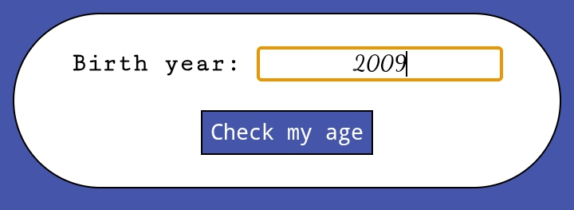

Color Explorer
An interactive web application that lets users preview colors in real time using a slider or by entering hexadecimal color codes manually.
Technologies: HTML5 • CSS3 • JavaScript
These projects represent my journey in front-end development. Each one helped me learn new concepts and improve my programming skills through hands-on practice.
An interactive web application that lets users preview colors in real time using a slider or by entering hexadecimal color codes manually.
Technologies: HTML5 • CSS3 • JavaScript

A JavaScript counter application featuring manual controls, customizable auto-count speed, and start, stop, and reset functionality.
Technologies: HTML5 • CSS3 • JavaScript

A SaaS readiness analyzer that scores startup growth foundations using JavaScript logic.
Technologies: HTML5 • CSS3 • JavaScript

I'm continuously learning and building. New projects will be added here as I expand my skills in web development, programming, and software engineering.